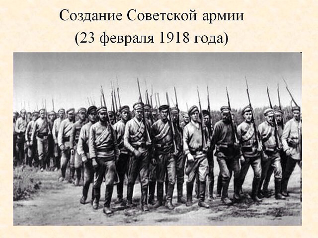

Папин день
23 Февраля — любимый праздник мужчин и день, к которому любящие женщины начинают готовиться практически сразу же после новогодних праздников. Однако, получая подарки, мало кто из представителей сильного пола задумывается о том, откуда появился этот важный праздник и почему его отмечают именно в холодном феврале.
День Красной Армии
Рождение праздника принято связывать с Декретом о Рабоче-крестьянской Красной Армии. Однако историки утверждают, что этот документ был принят еще 15 января 1918 года. На создание армии было выделено 20 миллионов рублей, что по тем временам считалось огромнейшей суммой. На фронте царила полная неразбериха — никто толком не мог понять за кого теперь нужно воевать и стоит ли вообще рисковать своей жизнью. Правительство нового советского государство с огромными усилиями пыталось сформировать армию, но этот процесс шел очень напряженно. Первый пункт по набору добровольцев был открыт 21 февраля в Петрограде. С призывом вступить в новую армию, защищающую Социалистическое Отечество, выступал вождь советского государства. Красную армию удалось собрать, но о значимости первых побед до сих пор спорят историки. Годовщину Красной Армии планировалось отмечать в день подписания декрета, затем хотели установить дату празднования 17 февраля, но в итоге назначили праздник на воскресенье, выпавшее в том году на 23 февраля. По непонятным причинам на несколько лет о военном празднике почему-то забыли. А торжественное воскрешение праздничной даты произошло в 1922 году. В конце января того года вышло постановление Президиума ВЦИК о праздновании четвертой годовщины рождения Красной Армии, а еще спустя год праздник широко отмечали в масштабах всей страны уже под новым именем — День Красной Армии, утвержденным Реввоенсоветом Республики.Значение 23 Февраля в СССР
В 1938 году в свет вышел «Краткий курс истории ВКП(б)», написанный Иосифом Сталиным. Суровый вождь ни разу не упомянул о ленинском Декрете. Власти окружили эту дату мифами о первых значимых успехах, утверждая, что 23 февраля 1918 года красноармейцы одержали решительные победы под Нарвой и Псковом. По всей вероятности, так пытались уничтожить факты поражений и подписание германского ультиматума. С 1946 года полюбившийся жителям огромной страны праздник стали назвать Днем Советской Армии и Военно-Морского Флота. Традиционно в этот день чествовали всех военных, к которым после войны мог отнести себя практически каждый гражданин. Постепенно с праздником начали поздравлять всех мужчин, даже тех, кто никогда не служил в армии.История Дня защитника Отечества в современной России
В 1995 году Государственная дума приняла Закон о днях воинской славы в России. Этим указом 23 февраля обрело новое наименование — День победы Красной Армии над кайзеровскими войсками Германии в 1918 году — День защитника Отечества. Однако это длинное название, мало соответствующее действительным фактам, продержалось всего лишь несколько лет. В 2002 году Государственная дума приняла постановление о переименовании 23 февраля в День защитника Отечества и объявила его нерабочим днем. Этим указом из описания праздника была стерта связь с победами Красной Армии над кайзеровскими войсками, как факт, несоответствующий действительности. Современный День защитника Отечества не лишен военной окраски, но теперь его сфера охвата не ограничивается только военными. Сегодня этот праздник считают своим все, кто имеет любое отношение к защите страны или своей семьи. Это праздник доблести, мужества, чести и любви в Родине. В этот день принято поздравлять мужчин всех профессий и возрастов, в том числе самых юных, которым только предстоит когда-то встать на защитные рубежи. Нельзя забывать и о том, что среди прекрасной половины тоже есть немало женщин, которые, рискуя своей жизнью, защищают соотечественников от различных опасностей и катаклизмов. 23 Февраля чествуют не только мужчин, но и женщин. Традиционные поздравления от руководства страны слышат в этот день служащие Вооруженных сил РФ, ветераны ВОВ и других боевых действий. К памятникам героических воинов возлагают венки и букеты цветов. По телевидению и радио транслируют праздничные концерты и поздравительные речи. Вечером в городах-героях, а также в населенных пунктах, где расположены штабы военных округов, флотов и общевойсковых армий, небо освещают праздничные салюты.Дорогие наши мужчины, поздравляем вас с 23 Февраля!
Желаем вам сил, здоровья, удачи, благополучия, счастья.
Пусть в ваших семьях всегда царит мир, покой и любовь.
Пусть вам никогда не придется защищать свой очаг с оружием в руках.
Добра, солнца, радости, удачи!
